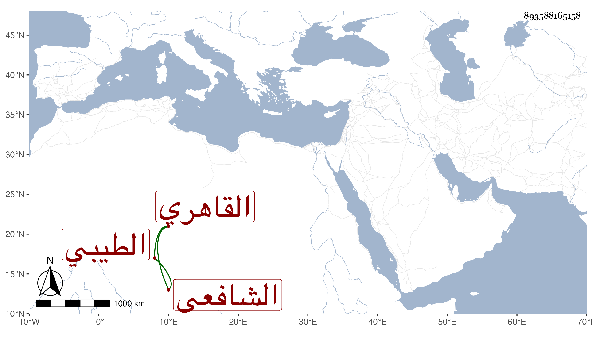

0902Sakhawi.DawLamic.ITO20230111-ara1.EIS1600.893588165158
Biography ID: 893588165158
146
أبو بكر بن علي بنعلي بن حسين الطيبي ثم القاهري الشافعي بواب سعيد السعداء . ممن قدم صغيرا فنزل جامع الأزهر وغيره وقرأ القرآن عند حسن العاملي وحفظ التبريزي واشتغل قليلا عند الفخر عثمان المقسي وتنزل في الجهات ولازم باب الخانقاه مدة تزيد على خمسين سنة نيابة واستقلالا وحج وكان كثير التلاوة لا بأس به. مات في سابع عشر جمادى الثانية سنة ثلاث وتسعين ودفن بتربة الصوفية ولم يكمل السبعين رحمه الله .
